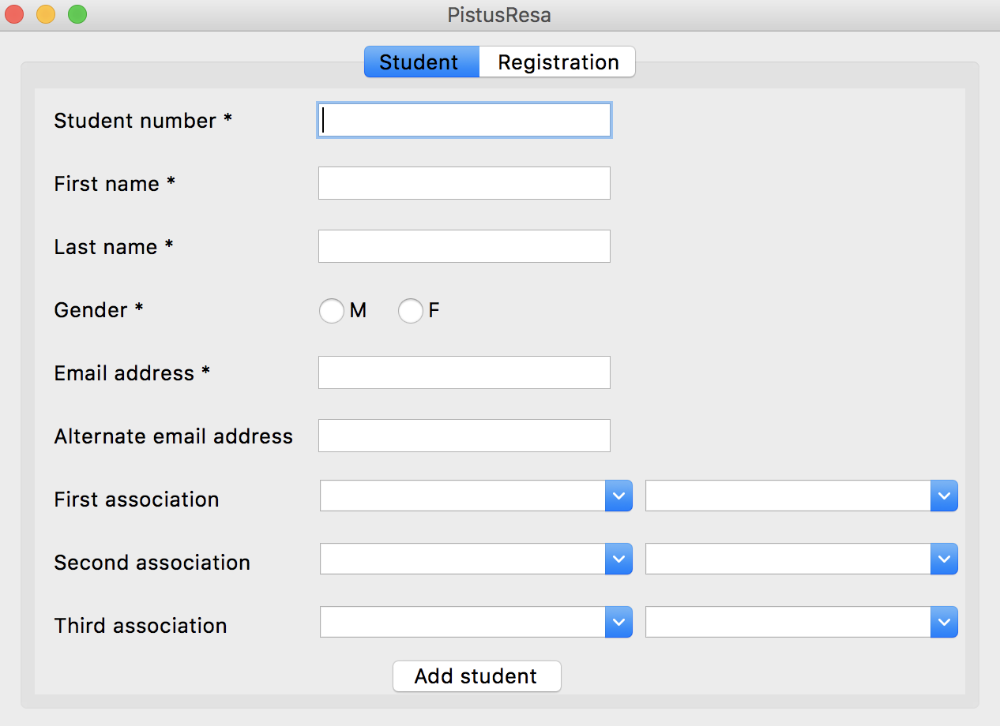

We thank Rémi Garde and Edmond de Roffignac for suggesting the idea of
a lab assignment centered around the Pistus event.
We thank Geneviève Leclerc for her suggestions and for collecting all the information about the
CentraleSupélec associations.
Context and Objective
"Pistus" (short for "Piston Ski") is an event organised by WACS (Winter
Association CentraleSupélec) during
the winter holidays every year. It's an awesome week-long mountain trip involving many
activities (including skiing, snowboarding, raclette binges and parties, just
to name a few).
Since the event cannot accommodate all CentraleSupélec students, the organizers
must cap the number of participants to the first 300 registered students.
When a student wants to register for the Pistus, the organizers will write
the student personal data in a Excel file, as well as the registration date and the amount
that is due by the student.
Upon registration, students have the option to pay
immediately or later; in any case, the student must pay within 5 days of the registration,
otherwise the registration is cancelled. The organizers will send a reminder by email 2 days before the deadline.
Once the student pays, the organizers will write to the Excel file the payment date.
The organizers keep two Excel files. One contains
all the data of each registration, i.e.,
the student number, first and last name, gender and email addresses
of the registered student, as well as the registration and payment dates, the
registration fee and the year of the event. [Show the Excel file].
The other Excel file contains the association membership information
on the students [Show the Excel file].
In these files, only the associations exist in the real world.
The names of the students have been randomly generated from
a list of french first and last names. These files do not contain any reference to actual students in the school.
This organization presents a lot of issues:
If students participate to several editions of Pistus in different years, their data is replicated
for each registration. This might lead to redundancies, as well as inconsistent data.
The organizers must manually check whether a student meets the payment deadline.
The organizers must manually send email reminders to the students.
For this reason, we want to develop a software, called
PistusResa, that the organizers can use to manage the registrations in an efficient way.
The architecture of PistusResa.
The architecture of PistusResa is shown in Figure 1. The software consists of a graphical user interface (GUI)
that allows an organizer to access all the functionalities.
The backend consists of five modules, each dedicated to a specific functionality:
The Authentication module allows an organizer to get access to the functionalities of PistusResa.
The Registration module allows an organizer to sign up a student for a specific Pistus edition.
The Payment module allows an organizer to register the payment of a student.
The Reservation Management module allows an organizer to manage the reservations.
The Deadline Management module is a background process that checks the payment deadlines,
sends email reminders and removes the registrations that do not comply with the
payment deadline.
PistusResa uses a relational database to store all the necessary
data regarding the registrations.
An additional module, named ETL (meaning Extract, Transform, Load), is used to import into the database the data on the past Pistus editions that are kept in the two
spreadsheets mentioned above.
Objectives of the Lab Assignment
This lab assignment is going to cover the second half of this lab session (1.5 hours)
and the next two lab sessions (6 hours), for a total of 7.5 hours.
In all these sessions, we expect all students to complete the following steps:
Deployment of the database (Section 2).
The ETL module (Section 3).
The registration module (Section 4).
A graphical interface (Section 5) that allows the
visualization of the registrations.
These steps will allow you to see a minimal version of the application.
Optionally, depending on your programming skills, you will develop the other modules as well.
Conventions Used in This Lab Assignment
The following typographical conventions are used in this lab assignment:
This icon denotes tips or general notes, something to pay attention to.
This icon denotes an action that you need to take before going further.
This icon denotes a point that you might want to discuss with your lab
supervisor.
This icon denotes tests that you have to make on your code.
This icon denotes a link to documentation that you can use to solve the exercises.
The documentation must be used to help you understand how to code the exercises.
You don't actually have to copy and run the examples written in the documentation.
Project Initialization
Please read the instructions in this section carefully
If you use Windows, you should add to the environment variable
Path two folders of your Anaconda installation [Tell me how].
First of all, you should locate the installation folder of your Anaconda distribution.
In my computer, for instance, Anaconda is installed in the folder
C:\Users\gquer\Ananconda3. Chances are that your installation folder is under
C:\Users\your_username\Anaconda3, where your_username is the name that identifies you
in your computer.
Once you've located the installation folder of Anaconda (the following instructions are relative
to Windows 10. If you have another version of Windows, please google how to
change environment variables in your windows edition):
Open the control panel.
Select System and Security.
Select System.
Select Advanced System Settings (on the left menu).
Click on the button Environment Variables.
In the System variables window, double-click on Path.
Select New, specify the value C:\Users\your_username\Anaconda3 and press Enter.
Select New, specify the value C:\Users\your_username\Anaconda3\Library\bin and press Enter.
Select New, specify the value C:\Users\your_username\Anaconda3\Scripts and press Enter.
Close all the windows of the control panel by clicking on OK.
Restart Visual Studio Code if had you already started it.
Create a folder called pistus on your computer.
Open Visual Studio Code (VSC) and select File → Open Folder;
select the folder pistus and open it.
A new window should appear that has on the left side a menu called
Explorer that lets you see the files in your projects.
You should see a project named PISTUS with no files.
Change the file encoding of your text editor to UTF-8 [Tell me how].
If you use Windows or Linux, select File → Preferences → Settings;
If you use MacOS, select Code → Preferences → Settings.
In the panel that appears, type the word "encoding" in the text field "Search settings";
a setting named "Files:Encoding" should appear. In the drop-down menu, select "utf8".
Install the Python extension in VSC if you haven't done it yet [Tell me how].
On the far left side of the VSC window, you should see a list of icons. Click on the icon
that looks like four squares (one of which appears to drift away from the others);
if you see Python among the enabled extensions, you're all set.
Otherwise, type the name Python in the textfield Search Extensions, select it and install it.
Since PistusResa is a fairly complex software with several components,
putting all code into a single file would be a bad idea.
Instead, we will organize the code into several packages,
which will ease its development and maintenance [What is a package?].
A package in Python is a collection of modules, a module is defined
as a file with extension .py containing Python code.
In order to create a package, you have to create a folder under your project containing
a special file named __init__.py.
The purpose of this file is to include optional initialization code.
For the moment, we will leave that file empty.
Our first lines of code will create the tables of the
PistusResa database.
We'll put that code in a module contained in a package named db.
Go to the Explorer, right-click on the name of your project and select
New Folder.
The Database
The database of PistusResa is intended to keep data on the students that register
for the Pistus.
Students are identified by a student number and have a first and family name, gender
and email addresses (a student can have more than one).
A student can belong to one or more associations; each association is
described by a name (unique) and a textual description of its activities.
Any student has a specific role in an association (e.g., president, secretary, member).
When a student registers for the Pistus, the year of the event,
the registration and the payment date are stored, as well as the amount paid.
The registration date and the payment date might be different.
Importantly, a student can participate to different Pistus editions in different years, but cannot
register twice for the same edition.
Database Design
The ER model of the database of Pistus is shown in Figure 2.
The logical data model of the database of PistusResa.
We need to derive the corresponding
physical data model, that consists of the collection of relational tables
that are part of the database [How to derive a physical model].
Rules to translate a logical data model into a physical data model:
For each one-to-many relationship between two entities \(A\) and \(B\).
Take the set \(K_B\) of attributes composing the primary key of \(B\)
and add it to the attributes of \(A\).
The new attributes of \(A\) will be a foreign key referencing the primary
key of \(B\).
For each many-to-many relationship R between two entities \(A\) and \(B\).
Create a new entity whose attributes are: all the attributes of \(R\),
the set \(K_A\) of attributes composing
the primary key of \(A\) and the set \(K_B\) of attributes composing the
primary key of \(B\).
The primary key of the new entity is composed of all attributes in \(K_A \cup K_B\).
The attributes in \(K_A\) (respectively, \(K_B\)) will be a foreign key referencing the corresponding
attributes in \(A\) (respectively, \(B\)).
For each entity in the ER diagram: create a relational table.
The attributes of the entity become the columns of the table.
Translate the ER diagram into a collection of
relational tables.
For each table, specify the primary and foreign keys.
For each column, specify its type.
Ask your lab supervisor to validate the schema.
Once the database design is in place, we need to create the actual database
in a Relational Database Management System (RDBMS).
Database Creation
To create the database, we either use SQLite or MySQL, not both.
We strongly recommend the use of SQLite as the DBMS for PistusResa
(much easier than MySQL)
SQLite is a software library written in C that implements a RDBMS.
SQLite does not need you to install a server. You just need to import the library into your application
and call its functions to create tables and insert and query data.
The database will be a simple binary file stored in
your computer.
In order to make a Python program communicate with a SQLite database, you need to have the
Python package sqlite3. This package should be already included in your Anaconda distribution.
Create a new file create_database.py under the package db.
Click here to open the documentation
of sqlite3. You will need it to do the exercises of this section.
Creating a new database. Since SQLite is not a server, you do not need to create any connection.
You can directly create a new database.
In the file create_database.py, add the code to create a database
named pistus. Execute the code.
In order to execute the code, please follow these instructions. Open a terminal by
selecting Terminal→New Terminal. At the bottom of the window a terminal appears.
Change the current directory to db by typing the command cd db.
The type the command: python create_database.py.
The code should create a file named pistus.db in the same directory as
the file create_database.py.
Creating the tables. After the creation of the database,
we need to create the tables composing the database itself.
In the file create_database.py, add the code to create all the tables in the database
pistus. For each table, specify the primary and foreign keys. Execute the code.
If you want to verify that your tables have been successfully created, you can
download and install the DB Browser for SQLite.
This will provide you a graphical interface to any SQLite database. After the installation,
just open the program, click on Open Database and select the file pistus.db.
If everything is OK, you should see the tables that you've just created.
If you could successfully install MySQL on your computer and you want to use it as
the RDBMS of PistusResa (not recommended!) [Click here to continue].
In order to make a Python program communicate with a MySQL server, you need to install the
Python package mysql-connector [Show me how].
Open a terminal in Visual Studio Code by selecting Terminal → New Terminal;
then type the following command (if you use Linux or MacOS):
pip install mysql-connector
If you use Windows, type the following command:
conda install mysql-connector-python
By using the MySQL connector, we can write Python code to connect to a MySQL server, create a new database,
create the tables and insert the data into the tables.
Make sure that an instance of MySQL server is running on your computer.
Create a new file create_database.py under the package db.
Click here to open the documentation
of MySQL Connector/Python. You will need it to do the exercises of this section.
Connecting to the MySQL server. The first step consists in connecting your Python program to the
instance of the MySQL server running
on your computer.
In the file create_database.py, write the code to connect to the
instance of the MySQL server running on your computer.
Creating a new database. Once the connection is established, we need to create the new
database for PistusResa.
In the file create_database.py, add the code to create a database
named pistus. Execute the code.
In order to execute the code, please follow these instructions. Open a terminal by
selecting Terminal→New Terminal. At the bottom of the window a terminal appears.
Change the current directory to db by typing the command cd db.
The type the command: python create_database.py.
Open the MySQL Workbench and verify that the new database
has actually been created.
Creating the tables. After the creation of the database,
we need to create the tables composing the database itself.
In the file create_database.py, add the code to create all the tables in the database
pistus. For each table, specify the primary and foreign keys. Execute the code.
Open the MySQL Workbench and verify that the tables have actually been created.
The ETL Module
As explained in the introduction, for the past editions of Pistus
the organizers had kept all the registration data in two spreadsheets;
we now want to load all these data into the Pistus database.
The ETL module is responsible for
extracting the data from the spreadsheets,
transforming and loading them into
the database.
In order to ease the automatic process of the spreadsheets by a Python program, we
converted them into CSV files [What are
CSV files?].
Unlike a spreadsheet, which is a binary file and needs a specific application (Microsoft Excel or equivalent)
to be read, a CSV file (short for comma-separated values)
is simply a plain-text file that can be opened with any text editor.
Any application that can read a spreadsheet provides a way to save it as a CSV file.
A CSV file has as many rows as the original spreadsheet; each row is a sequence of values,
separated by a special character, called the separator, or delimiter
(typically, a comma or
a semi-colon), that acts as a column delimiter.
Since a CSV file is plain-text, reading a CSV file from a Python application
is way easier than reading directly a spreadsheet.
In your project PISTUS, create a new folder named data.
When you click on the above links, the CSV files will be downloaded to the Downloads folder of
your computer. Simply drag them into the data folder in the Explorer panel of VSC.
You can see the content of these files by simply clicking once on them in the
Explorer panel.
In both files, the separator is the semi-colon (;).
The file student_registrations.csv contains the data
on the registration to the Pistus in the years 2016, 2017, 2018.
The file student_membership.csv contains the data on the affiliation of the students to
the different associations.
If you fiddle with the files, you will immediately notice that many data are replicated;
first and last names and the email addresses of a student, for instance, occur in both files.
Moreover, these data present some variability that is undesired when we intend to
process them through a software application:
The gender is expressed in different ways (e.g., female are alternatively identified by F,
W and fille).
Different formats are adopted for dates (e.g., DD/MM/YYYY, YYYY/MM/DD).
Different formats are adopted for expressing registration fees (e.g., 20,5e, 20,5 euros).
In some cases, the registration fee is a numeric value, in some other cases it might contain some
characters from the alphabet. If we try to import these values into a Pyhton program and convert them into
a float, we would get errors.
Some students appear multiple times in both files (e.g., Ericka GUYOMARD in the file student_registrations.csv),
because they participate to several Pistus editions or belong to more than one association.
All these anomalies in the data are referred to as noise; virtually all
datasets present a certain amount of noise, that must be addressed before using the data.
In other words, we need to clean the data before loading them into the database.
We're now going to develop the ETL module step by step.
Create a package named etl in your project. Don't forget to
create the file __init__.py in the package!
The ETL module consists of three submodules:
The Extraction (E) submodule. It extracts the content of the CSV files and organizes it into
several in-memory data structures.
The Transformation (T) submodule. It makes the data comply with certain requirements, in particular it cleans the
data from the noise.
The Load (L) submodule. It loads the transformed data into the database.
The Extraction Submodule
If you correctly designed your database, each table should contain data on entities
of a specific type (e.g., a student, an association).
In the two input files, however, the data on the different entities are all mixed up
in the same table.
For example, in student_registrations.csv
the personal data of the students (e.g., their gender) occur in the same table
as the data on the Pistus editions (e.g., the registration fee).
The Extraction submodule extracts the content of the input CSV files and
organizes the data on the different entities into separate data structures.
For each table in the database (e.g., the table Student),
the submodule creates a list where each item is a row of that table,
describing one of the entities (e.g., a student) of the table.
The first choice that we need to make is how to represent a row in the list.
In fact, representing a row as a mere string, like in the CSV file, would not allow for an easy access
to the values of the columns.
Which data structure would you choose to represent a row? [Show the answer].
Different solutions are possible:
An object. We can represent the entity described by a row as an instance of a class.
A list. Each item of the list is a column value in the row.
A tuple. Same as a list.
A dictionary. Each item of the dictionary is a key-value pair, where the key is the name of the
column associated to its value.
Any of these solutions is a viable option. We're going to opt for the first one, which means that
we will have to define a class for each type of entity stored in the database (e.g, student, association).
The reason why we choose the first option is twofold:
The functions transforming the values in the Transformation submodule will be coded directly in the
classes where the values are.
You need to practice the object-oriented notions ☻.
Definition of the data structures.
We are now going to define the data structures to represent the data to be transformed and loaded into the
database.
Create a file extraction.py in the etl package.
Click here to open
the guide to object-oriented programming in Python.
For each table in your database, create, in file extraction.py,
a class with the same name as the table. Each class defines the properties of an entity
contained in the corresponding table. [Example].
If your database defines a table called Student,
you should create a class named Student, whose fields are the columns of the namesake table.
Each instance of the class Student will correspond to a row in the table.
Data Extraction. We are now going to extract the data from the input CSV files
and, for each table in the database, create a list that holds the content of the table.
An item in any of these lists will be an instance of the class describing a row stored in the
corresponding table [Example].
If your database defines a table called Student, the Extraction submodule needs to create a
list, where each item is an instance of the class Student describing a row in the namesake table.
Click here to open the documentation on CSV files.
In file extraction.py, write a function named extract defined by the following
signature:
$$
extract(student\_registrations, student\_membership): (list_1, list_2, \ldots, list_n)
$$
Input of the function:
\(student\_registrations\). The file student_registrations.csv.
\(student\_membership\). The file student_membership.csv.
Output of the function:
A tuple \((list_1, list_2, \ldots, list_n)\), where \(n\) is the number of tables in
your database, and \(list_i\) is the list containing the rows of the \(i\)-th table.
A row is represented by an object.
The order of the tables is purely alphabetical, that is: Association,
EmailAddress, Membership, PistusEdition,
Registration, Student.
All values extracted from the CSV files will be treated as strings.
In file student_registrations.csv, the registration of a student
to a specific Pistus edition never occurs more than once. In other words, there will never be two
rows for the registration of student 8298259 to the Pistus edition 2016.
In file student_membership.csv, the membership of a student
to a specific association never occurs more than once.
Data on a specific student, association and Pistus edition are replicated
many times in the two CSV files.
You should make sure that you don't have duplicates in the lists that hold these data.
Check with your lab supervisor the best strategy to avoid duplicates in
a list.
You're now going to check whether your function returns the
expected result by using a unit test.
To this extent, create a file named extraction_test.py in the package etl
and paste the code below:
import unittest
from extraction import extract
class TestExtract(unittest.TestCase):
def test_Extract(self):
(associations, email_addresses, memberships, \
pistus_editions, registrations, students) = extract("../data/student_registrations.csv", "../data/student_membership.csv")
self.assertEqual(len(associations), 11, "The number of associations should be 11")
self.assertEqual(len(email_addresses), 910, "The number of email addresses should be 910")
self.assertEqual(len(memberships), 895, "The number of memberships should be 895")
self.assertEqual(len(pistus_editions), 3, "The number of Pistus editions should be 3")
self.assertEqual(len(registrations), 900, "The number of registrations should be 900")
self.assertEqual(len(students), 602, "The number of students should be 602")
if __name__ == '__main__':
unittest.main()
VSC might complain that it does not know the module extraction. Simply ignore this error.
Open a terminal, execute the command cd etl and run the following command:
python extraction_test.py
Check the result of the test and correct your function extract if needed.
The Transformation Submodule
The goal of the transformation submodule is to clean the extracted data
from the noise.
Four attributes need to be cleaned: the gender, the registration fee, and the
registration and payment dates.
Cleaning the values of gender.
The attribute gender in the input file student_registrations.csv
takes the following values:
For males: M, H and garçon.
For females: F, W and fille.
Write a function clean_gender that changes the value to
M or F depending on whether the gender refers to a male or a female.
Where would you define this function?
Think of where you defined the attribute gender.
Create a file cleaning_test.py and define a unit test for
the function clean_gender in the same way as we defined the test extraction_test.py.
Cleaning the values of registration_fee.
In the file student_registrations.csv, a registration fee can be expressed as:
A numeric value. Only a number is specified. Two cases are possible:
The decimal separator is a comma (e.g., 20,5).
The decimal separator is a point (e.g., 20.5).
An alphanumeric value, typically a number followed by
a textual suffix. Between the number and the suffix
there might be a space. The suffix can be one of the following:
e, such as in 20.5e and 20.5 e.
E, such as in 20.5E and 20.5 E.
euro, such as in 20.5euro and 20.5 euro.
euros, such as in 20.5euros and 20.5 euros.
Write a function clean_registration_fee
that converts the value of the registration fee to a Python floating number.
Where would you define this function?
Think of where you defined the attribute registration_fee.
In the file cleaning_test.py define a unit test for
the function clean_registration_fee.
Cleaning the dates.
In the file student_registrations.csv,
a (registration or payment) date might be expressed in the following formats:
month (in english) DD, YYYY (e.g., December 20, 2015).
DD month (in french) YYYY (e.g., 20 décembre 2015).
Write a function clean_date defined by the following
signature:
$$
clean\_date(old\_date): new\_date
$$
The input of the function is a date in one of the formats specified above;
the output of the function is a date in the format YYYY/MM/DD.
The input old_date is a string value.
The output new_date is an instance
of the class datetime.date.
If the string representing the value of the old_date has
length 0, then the function must return None.
Where would you define the function clean_date?
Think of where the attributes registration_date and payment_date
are defined.
You should consider using a class method.
In the file cleaning_test.py define a unit test for
the function clean_date.
Write two functions clean_registration_date
and clean_payment_date that clean the registration and payment dates
by using the function clean_date defined previously.
Where would you define these functions?
Think of where you defined the attributes registration_date and payment_date.
Loading Data into the Database
It's now time to import the data from the CSV files into the database.
Create a new file named data_loading.py in the package
etl. You'll define the functions demanded by Exercises 8 through 14 in this file.
In order to load data into the database, click here to open the documentation
of MySQL Connector/Python (if you use MySQL) or here
to open the documentation of how to use SQLite.
Write a function
import_associations() defined by the following signature:
$$
import\_associations(cursor, list\_associations)
$$
The input of the function is the cursor object
that you use to connect to the database and
the list of associations returned by the function
extract defined in Exercise 3.
Write a function
import_students() defined by the following signature:
$$
import\_students(cursor, list\_students)
$$
The input of the function is the cursor object
that you use to connect to the database and the list of students returned by the function
extract defined in Exercise 3.
Write a function
import_email_addresses() defined by the following signature:
$$
import\_email\_addresses(cursor, list\_email\_addresses)
$$
The input of the function is the cursor object
that you use to connect to the database and the list of email addresses returned by the function
extract defined in Exercise 3.
Write a function
import_pistus_editions() defined by the following signature:
$$
import\_pistus\_editions(cursor, list\_pistus\_editions)
$$
The input of the function is the cursor object
that you use to connect to the database and the list of Pistus editions returned by the function
extract defined in Exercise 3.
Write a function
import_memberships() defined by the following signature:
$$
import\_memberships(cursor, list\_memberships)
$$
The input of the function is the cursor object
that you use to connect to the database and the list of memberships returned by the function
extract defined in Exercise 3.
Write a function
import_registrations() defined by the following signature:
$$
import\_registrations(cursor, list\_registrations)
$$
The input of the function is the cursor object
that you use to connect to the database and the list of registrations returned by the function
extract defined in Exercise 3.
We now wrap everything up and we write the code to call the functions defined in the Exercises
9 through 14 and import the data.
At the end of the file data_loading.py, write the following code:
if __name__ == '__main__':
The Python interpreter will run the code that follows this instruction
when you execute the script data_loading.py.
You'll write the code demanded in Exercise 14 after this instruction.
Write the Python code to:
Connect to the Pistus database.
Call the function extract defined in Exercise 3 to extract the data from the
input CSV files.
Clean the data by using the functions defined in Exercises 4, 5 and 7.
Load the data into the database by using the functions defined in Exercises 8 through 13.
Verify that the data is correctly loaded into the Pistus database.
The Registration Module
The registration module contains the functions necessary to register
a student to a specific Pistus edition.
If the student hasn't participated in any previous Pistus edition, PistusResa
will ask her to insert all her personal data, including the names of the associations to which she belongs
and her roles in them.
If the student has already participated in a previous Pistus edition, her data will already be in the database.
In your project, create a package named registration.
Create a file named registration_module.py in the package registration.
This file will contain the definition of all the functions of the registration module.
In the following exercises, you'll need to use parameterized queries .
If you use MySQL, check the documentation by following this link.
If you use SQLite, check the documentation by following this link.
The object cursor used to execute queries in the database.
The output is a list containing the associations of the student.
Each element of this list is a tuple (asso_name, stud_role),
where asso_name is the name of an association and
stud_role is the role of the student in that association.
If no association can be found the output is None.
Write the code for the function get_student_associations() in the file named
registration_module.py.
The object cursor used to execute queries in the database.
The object conn used to connect to the database.
The payment date (the default value is None).
The output is a boolean value (success):
True, if the student can be registered.
False, if the student cannot be registered.
Write the code for the function register_student_to_pistus_edition() in the file named
registration_module.py.
The Graphical User Interface
We're going to develop the Graphical User Interface (GUI) of PistusResa shown in Figure 3 by using
the library tkinter included in the Anaconda distribution.
The GUI consists of a main window with a tabbed panel, which tkinter
refers to as notebook, containing two tabs:
The tab Student (shown in Figure 3),
that allows a Pistus organizer to add a new student or get
the information of an existing student.
The tab Registration (shown in Figure 4), that allows a Pistus organizer to
register a student to a Pistus edition.
fill in
the information after the organizer types the student number.
Otherwise, the organizer has to type all the requested information and then
click
When a Pistus organizer wants to register a student to a Pistus edition,
she first types the student number.
If the student already exists in the database, the GUI will
get from the database all information about the student and fill in all the fields.
The organizer will then click on the tab "Registration" to register the student
to the Pistus edition.
If the student does not exist in the database, the organizer has to type all the student
information and click on the button "Add student" before clicking on the tab "Registration".

The GUI of PistusResa.
Here we give you the code of the skeleton of the GUI, which is explained right
after the code.
Read the code and the explanation carefully in order
to understand its structure.
import tkinter as tk
from tkinter import messagebox
from tkinter import ttk
import sqlite3
'''
Defines the GUI of the application PistusResa
'''
class PistusResaGUI(tk.Frame):
def __init__(self, conn, cursor, parent=None):
super().__init__(parent)
self.parent = parent
self.conn = conn
self.cursor = cursor
self.rb_gender = tk.StringVar(value="")
self.stud_number = tk.StringVar(value="")
self.create_widgets()
self.pack()
'''
Create all the graphical elements (widgets) in the window.
'''
def create_widgets(self):
# Add a title to the main window.
self.parent.title("PistusResa")
# Create the notebook (tabbed panel) inside the main window.
self.create_notebook()
'''
Create the notebook (tabbed pane) inside the main window
'''
def create_notebook(self):
# Create in the main window a notebook (panel with different tabs)
nb = ttk.Notebook(self.parent)
# Create the student tab.
self.create_student_tab(nb)
# The registration tab.
self.create_registration_tab(nb)
nb.pack(expand=1, fill="both")
'''
Create the student tab
'''
def create_student_tab(self, nb):
pass
# Create the registration tab
def create_registration_tab(self, nb):
pass
main_window = tk.Tk()
conn = sqlite3.connect('./db/pistus.db')
cursor = conn.cursor()
app = PistusResaGUI(conn, cursor, parent=main_window)
app.mainloop()
cursor.close()
conn.close()
Here is the explanation of the code:
Lines 1-4. We import the necessary modules from tkinter
and sqlite3 because we'll need to plug the GUI to the database.
Line 55. Entry point of the program, where we create the main window
of the application.
Lines 56-57. We open a connection to the database.
Line 58. We create an instance of the class PistusResaGUI (see below).
Line 59. We execute the GUI. The main window will be displayed. The code will loop on
this instruction until the main window is closed by the user.
Lines 60-61. We close the connection to the database. These two lines will be
executed only when the main window will be closed by the user.
Lines 9 to 53. We define the class PistusResaGUI that contains the
definition of the GUI. The class is defined as the subclass of tk.Frame, which essentially
means that it implements a window that will be rendered on screen.
Lines 10 to 18. Constructor of the class. It initializes the variables of the class.
Line 11. We call the constructor of the parent class (tk.Frame).
As a result, our class PistusResaGUI inherits all the methods and properties
from the class tk.Frame.
Lines 12-16. Initialization of properties in the class PistusResaGUI.
All these properties will be accessible by all methods defined in the class.
self.parent refers to the main window of the GUI.
self.conn refers to the connection to the database.
self.cursor refers to the object used to execute queries on the database.
self.rb_gender refers to a variable that will store the current value of the
radio buttons gender.
stud_number refers to a variable that will store the current value of the
text field Student number.
Line 17. We call a function defined at line 23 to create the elements
(a.k.a., widgets) of the GUI.
Line 18. We call the function pack (defined in the class tk.Frame)
to arrange the widgets inside the frame.
The function create_widgets (Lines 23 to 28) gives a title to the main window
and then invokes the function to create the notebook.
The function create_notebook (Lines 33 to 43):
Line 35. Creates a notebook. The constructor of the
class ttk.Notebook is called with the parameter self.parent.
This means that the notebook is added to the main window.
Line 38-41 We invoke the two functions to create the Student and Registration tabs.
Line 43. We dispose the notebook inside the main window by specifying that
this notebook should cover the whole window, both horizontally and vertically.
The two functions create_student_tab and
create_registration_tab are not implemented. You'll have to do it.
Create a package gui in your project.
Create a file main_window.py in the package gui.
Copy the code of the skeleton of the GUI into this file.
The Tab Student
We'll now complete the function create_student_tab.
The statement pass that you see in the definition of
both create_student_tab and create_registration_tab means
that the methods are not implemented.
Remember to remove this statement when you implement the functions.
The function create_student_tab takes in the variable nb that is the notebook
where the student tab must be added.
In the function create_student_tab, write the code
that creates a tab "Student" inside the notebook nb.
Execute the code to see the result and, in case of doubts, ask your lab
supervisor.
As we can see in Figure 3, the tab "Student" contains a form that consists of
a grid with 10 rows and 3 columns.
Each row corresponds to a property;
in the first column, we find the labels ("Student number *", "First name *",...)
that indicate the name of the property.
The asterisk at the end of the label text indicates a
required field.
In the function create_student_tab, write the code
that creates all the labels inside the tab "Student".
The labels are disposed in a grid and occupy the first column.
Execute the code to see the result and, in case of doubts, ask your lab
supervisor.
The fields of the form in the tab "Student" are as follows:
Text fields, in the case of the properties student number, first and last name, email address
and alternate email address.
Radio buttons, in the case of the property gender.
Combo boxes, in the case of the properties first, second and third association.
Buttons, in the case of the button "Add student".
In the function create_student_tab, write the code
that creates the following text fields:
stud_number_entry. Text field allowing to enter the student number.
This appears on the same row as the label "Student number *".
first_name_entry. Text field allowing to enter the student first name.
This appears on the same row as the label "First name *".
last_name_entry. Text field allowing to enter the student last name.
This appears on the same line as the label "Last name *".
email_entry. Text field allowing to enter the student email address.
This appears on the same line as the label "Email address *".
alternate_email_entry. Text field allowing to enter the student alternate email address.
This appears on the same line as the label "Alternate email address".
All these text fields are in the second column of the grid.
The text field corresponding to the label "Student number"
must be bound to the variable self.stud_number. This way,
the value in that text field can be shared with the tab "Registration", as we'll see
later.
Execute the code to see the result and, in case of doubts, ask your lab
supervisor.
In the function create_student_tab, write the code
that creates the radio buttons M and F corresponding to the property
gender.
Both radio buttons should occupy the second column in the grid.
Both radio buttons must be bound to the variable
self.rb_gender. That variable will contain the value of the currently
selected button.
Execute the code to see the result and, in case of doubts, ask your lab
supervisor.
From Figure 3, you can see that there are two combo boxes associated to the label
"First association" (the same goes for the labels "Second association" and "Third association").
The combo box in the second column contains the names of the associations, while the one in the
third column contains the possible roles of a student in an association.
The names of the association are available in the database in the table Association;
The names of the student roles are available in the database in the table
Membership.
Therefore, the values of these two combo boxes can be loaded from the database.
In the function create_student_tab, write the code
that creates two lists, one called associations and the other called
stud_roles that contain respectively the names of the associations and
the student roles obtained from the database.
In order to query the database, remember that you can use the
variable self.cursor.
In the code, print the content of the two lists. Execute the
code in order to check whether the names of the associations and the student roles
are loaded correctly from the database.
In the function create_student_tab, write the code
that creates the combo boxes containing the names of the associations and
the student roles associated to the labels "First association", "Second association" and
"Third association".
The combobox containing the association names should appear in the
second column, while the one containing the student roles should appear in the third column.
Execute the code to see the result and, in case of doubts, ask your lab
supervisor.
The last widget that we need to add is the button "Add student".
In the function create_student_tab, write the code
that creates button "Add student".
The button should be placed in the second column in the last row.
Execute the code to see the result and, in case of doubts, ask your lab
supervisor.
Handling events in the GUI
Up to now, the GUI is just a static interface that
does not react to the user's actions.
We need to code the functions that handle the input events.
In the tab "Student", there are two types of events that need to be handled:
First event. The user types a student number and moves the mouse cursor out of the text field student_number_entry.
The response of the GUI is to search in the database a student with the specified
number; it the student exists, all information about her are loaded and inserted into the form.
Second event. The user clicks on the button "Add student". The response of the GUI is to
execute an INSERT INTO query to add the new student to the database.
The first event.
We define a function find_student that is invoked by the GUI when the mouse cursor moves out
of the text field student_number_entry.
We can define find_studentdirectly inside the function create_student_tab()
(Python does allow that).
Copy the following code right after the definition of the text field student_number_entry.
def find_student(event):
print("Here you'll write the code to find the student in the database", event.type)
stud_number_entry.bind('<FocusOut>', find_student)
Lines 1-2 define the function find_student.
Line 3 tells the GUI to invoke the function find_student when the mouse cursor leaves ("focus out") the text field
student_number_entry.
The function find_student accepts a parameter event that carries information
about the event that triggered the call of the function (e.g., its type).
Execute main_window.py, try to enter something in the text field
student_number_entry and to move the cursor of the mouse out of the textfield.
In the terminal you should see the message:
"Here you'll write the code to find the student in the database FocusOut"
Now, we're going to write the code in the function find_student to retrieve a student from the
database and fill in the form fields automatically.
The first thing to do is to reset the form fields, meaning that we want to erase any value previously contained
in those fields.
Write the code to erase the content in all the fields of the form.
Execute the file main_window.py, write some random values in the
fields of the form and then try to trigger the function find_student to verify that
all values are reset.
Now we intend to write the code to load from the database the student with the student number specified in the
text field student_number_entry. For now, we just load the first and last name, gender and email addresses
(we ignore the associations).
Write the code to load the first name, last name, gender and email addresses of the student
having the student number specified in the text field student_number_entry.
Remember to use the function get_student that you defined in the registration module.
To import it into your Python file main_window.py, add the following line on top
of the file:
from registration.registration_module import get_student
Remember that the function get_student in the registration module returns None if no student
is found with the given student number.
Execute the code, type the student number 3528 and verify that
the fields corresponding to the first name, last name, gender and email addresses are filled in.
Now we need to get the data on the associations too.
Write the code to load the associations from the database and fill in the corresponding
fields.
Remember to use the function get_student_associations
that you defined in the registration module.
To import it into your Python file main_window.py, add the following line on top
of the file:
from registration.registration_module import get_student_associations
Remember that the function get_student in the registration module
returns None if no association is found for the student.
Execute the code, type the student number 3528 and verify that
the fields corresponding to the associations are filled in.
The second event. We now define the function add_student_db that will be invoked when the
button "Add Student" is clicked.
Since we'll need to display messages to the user, we need to import the
widget messagebox from the library tkinter. At the top of the file
main_window.py, write the following line:
from tkinter import messagebox
Copy the following code right before the definition of the button
"Add student":
def add_student_db():
if len(stud_number_entry.get()) == 0 or \
len(first_name_entry.get()) == 0 or \
len(last_name_entry.get()) == 0 or \
self.rb_gender.get() == '' or \
len(email_entry.get()) == 0:
messagebox.showerror('Registration error', 'Fill in all the mandatory fields (*)')
return False
and in the definition of the button "Add student" add the following option: command=add_student_db, so the
definition of the button will look like as follows:
In the code of the function add_student_db, line 2,3,4,5,6 check that the mandatory fields have been filled in.
If this is not the case, the GUI shows a dialog window with the message "Fill in all the mandatory fields (*)" and returns
False.
Execute the file main_window.py and try to click the button
"Add student" without entering any information. You should get the error message defined in the function
add_student_db.
We now write the code to add a student to the database.
For now, we just add the student number, first and last name, gender and email addresses
and we ignore the associations.
Write the code to add the student number, first and last name, gender and email addresses.
Remember to use the function add_student that you defined in the
registration module.
If the function add_student returns False (which happens when the student cannot be
added to the database), display an error message using the function messagebox.showerror() and return False.
If the function add_student returns True, display a message
through the following instruction messagebox.showinfo('Registration', 'Student added successfully!')
Try to add a student with student number 4321 and see if you can add it to the database.
You might want to verify that the new student is actually in the database by running a query in
DB Browser for SQLite.
We finally write the code to add a student to the associations.
Write the code to add a student to the associations.
Remember to use the function add_student_to_associations that you defined in the
registration module.
If the function add_student_to_associations
returns False (which happens when the student cannot be
added to the database), display an error message using the function messagebox.showerror() and return False.
If the function add_student_to_associations returns True, display a message
through the following instruction messagebox.showinfo('Registration', 'Student added successfully to the associations!')
Try to add yourself to the database.
You might want to verify that the new student is actually in the database by running a query in
DB Browser for SQLite.
The Tab Registration
The code of the tab "Registration" is provided to you.
Just copy and paste the following code into the definition
of the function create_registration_tab.
def create_registration_tab(self, nb):
reg_tab = ttk.Frame(nb)
nb.add(reg_tab, text='Registration')
ttk.Label(reg_tab, text="Pistus Edition *").grid(row=0, padx=10, pady=10, sticky='W')
pistus_edition_entry = ttk.Entry(reg_tab)
# Get the Pistus edition from the db corresponding to the specified year.
def get_edition(event):
reg_fee_entry.configure(state='normal')
reg_fee_entry.delete(0, tk.END)
self.cursor.execute("SELECT registration_fee FROM PistusEdition WHERE year=?", (pistus_edition_entry.get(),))
row = self.cursor.fetchone()
if row is not None:
reg_fee_entry.insert(0, row[0])
reg_fee_entry.configure(state = 'disabled')
pistus_edition_entry.bind('', get_edition)
pistus_edition_entry.grid(row=0, column=1, padx=10, pady=10, sticky='W')
ttk.Label(reg_tab, text="Registration fee *").grid(row=1, padx=10, pady=10, sticky='W')
reg_fee_entry = ttk.Entry(reg_tab)
reg_fee_entry.grid(row=1, column=1, padx=10, pady=10, sticky='W')
ttk.Label(reg_tab, text="Student number *").grid(row=2, padx=10, pady=10, sticky='W')
stud_number_entry = ttk.Entry(reg_tab, textvariable=self.stud_number, state='disabled')
stud_number_entry.grid(row=2, column=1, padx=10, pady=10, sticky='W')
ttk.Label(reg_tab, text="Registration date *").grid(row=3, padx=10, pady=10, sticky='W')
reg_date_entry = ttk.Entry(reg_tab)
reg_date_entry.grid(row=3, column=1, padx=10, pady=10, sticky='W')
ttk.Label(reg_tab, text="Payment date").grid(row=4, padx=10, pady=10, sticky='W')
payment_date_entry = ttk.Entry(reg_tab)
payment_date_entry.grid(row=4, column=1, padx=10, pady=10, sticky='W')
# Adds a new registration
def add_registration():
if len(pistus_edition_entry.get()) == 0 or \
len(reg_fee_entry.get()) == 0 or \
len(stud_number_entry.get()) == 0 or \
len(reg_date_entry.get()) == 0:
messagebox.showerror("Registration error", 'Fill in all the mandatory fields (*)')
return False
try:
# Check if the pistus edition already exists.
self.cursor.execute("SELECT * FROM PistusEdition WHERE year=?", (pistus_edition_entry.get(),))
row = self.cursor.fetchone()
# if not, we add it.
if row is None:
add_pistus_edition(pistus_edition_entry.get(), reg_fee_entry.get(), self.cursor, self.conn)
reg_date = datetime.datetime.strptime(reg_date_entry.get(), '%Y/%m/%d').date()
payment_date = None
if len(payment_date_entry.get()) > 0:
payment_date = datetime.datetime.strptime(payment_date_entry.get(), '%Y/%m/%d').date()
register_student_to_pistus_edition(stud_number_entry.get(), pistus_edition_entry.get(), \
reg_date, self.cursor, self.conn, payment_date)
except sqlite3.Error as error:
messagebox.showerror('Registration error', error)
return False
messagebox.showinfo('Registration', 'Registration added successfully!')
return True
ttk.Button(reg_tab, text="Register", command=add_registration).grid(row=5, column=1, padx=10, pady=10)
The Deadline Management Module
The Deadline Management module
makes sure that all students pay their dues on time.
More specifically, this module is executed as soon as the application
PistusResa is opened and then every 24 hours.
At each execution, the module operates the three following tasks:
Data Loading. Loads into two separate lists the registrations of the students who have exceeded the
deadline payment (the deadline payment is computed as the registration date + 5 days)
and those who still have ≤ 2 days left to the deadline.
Registration removal. Removes the registration of the students that have exceeded the deadline payment.
Email reminder. Sends an email reminder to the students
involved in the registrations loaded in the second list.
We're now going to develop the three tasks separately.
Create a Python file
named dmm.py in the package gui.
Copy the following code to the file dmm.py.
class DeadlineManagementModule():
def __init__(self, conn, cursor, app):
self.cursor = cursor
self.conn = conn
self.app = app
def deadline_management(self):
print("Printing this every 5 seconds")
self.app.after(5000, self.deadline_management)
The previous code:
Creates a class DeadlineManagementModule with three properties: the object
conn used to connect to the database, the object cursor used to
query the database and the main window app of PistusResa.
Defines a function deadline_management() that calls itself every 5 seconds.
Add the following lines to the file main_window.py right after the
line that reads app = PistusResaGUI(conn, cursor, parent=main_window).
Creates an object dmm of the class DeadlineManagementModule.
Calls the function dmm.deadline_management immediately when the main window of the
application is started.
Run the file main_window.py and checks whether the
message "Printing this every 5 seconds" appears on the terminal every five seconds.
Everything's works? Great! You've just created a module that
is activated in the background to do so task.
By using the graphical interface of
PistusResa, register yourself to next year's Pistus edition.
As a registration date, specify two days ago.
This way, you'll have in your database one student (you) that has still two days left to the
payment deadline.
Remember to specify a date in the format YYYY/MM/DD.
Data Loading
In the class DeadlineManagementModule we define
a function load_data() as follows:
The output of this function is a tuple (expired_registrations, reminder_registration), where:
expired_registrations is the list of all registrations that exceeded the payment deadline.
Remember that the payment deadline is computed as registration_date + 5.
Each item of this list is an object of the class Registration
that you defined in the file etl.extraction.py.
reminder_registration is the list of all registrations whose payment deadline is
two days from now Each item of this list is an object of the class Registration
that you defined in the file etl.extraction.py.
Write the code for the function
load_data.
In SQLite, you can calculate the difference between
two dates by first converting the dates into the Julian days.
For instance, the following SQL queries loads the number of
days between today's date and the registration date
for all the registrations.
SELECT julianday('now') - julianday(registration_date)
FROM registration
Create a file dmm_load_test.py in the package gui
and copy the following code:
import unittest
import sqlite3
from gui.dmm import DeadlineManagementModule
class TestDataLoad(unittest.TestCase):
def test_DataLoad(self):
conn = sqlite3.connect('./db/pistus.db')
cursor = conn.cursor()
dmm = DeadlineManagementModule(conn, cursor, None)
(expired_registrations, reminder_registrations) = dmm.load_data()
self.assertEqual(len(expired_registrations), 42, "The number of expired registrations should be 42")
self.assertEqual(len(reminder_registrations), 1, "The number of reminder registrations should be 1")
cursor.close()
conn.close()
if __name__ == '__main__':
unittest.main()
Run this file to check whether your implementation of the function
load_data() is correct.
This test will also create in the folder gui
a file named expired_registrations that stores all the
expired registrations. You'll need them later to verify that
these registrations are successfully removed from the database.
Registration Removal
In the class DeadlineManagementModule we define
a function remove_registrations() as follows:
expired_registrations. The list of all registrations that missed the payment
deadline. This is the first list returned by the function load_data()
The output is a boolean value:
True. If the registrations could be removed.
False. If the registrations could not be removed.
Write the code to implement the function
remove_registration().
Remember to commit the modifications to the database.
Email reminder
In the class DeadlineManagementModule we define
a function email_reminder() as follows:
email_reminder(self, reminder_registrations)
The input is:
reminder_registrations. The list of all registrations
whose payment deadline is ≤ 2 days away. This is the second list returned
by the function load_data.
The function does not return any output.
In order to actually send an email through a Python program, you would need to connect to the SMTP
server of your email provider.
However, this will require you to adjust the security settings of your email account, which would expose
it to some security risks.
A solution that we'll use in this lab is to set up a local SMTP debugging server.
Open a new terminal and type the following command in the terminal:
The previous command will start a SMTP server on localhost (that is, your machine) at port 1025.
After executing the command, the terminal will not show any output, it will just hang waiting for connections.
Do not close the terminal window, otherwise you would stop the server.
When you "send" an email through this port, the content of the email is displayed in the terminal.
No actual email is sent.
Write the code to implement the function
email_reminder().
You might want to check the documentation
to find out how to send an email from your Python program.
Putting All Together
We now complete the function deadline_management() so as it calls the three
functions defined above.
Complete the function
deadline_management() by adding the code that calls the three
functions load_data(), remove_registrations and
email_reminder.
By using DB Browser for SQLite, run the following query:
SELECT * FROM Registration WHERE payment_date IS NULL
You should see only one registration in the table Registration (yours).
Look in the terminal where you opened the SMTP server.
You should see the email reminder that you sent.
The Registration Management Module
The registration management module allows a Pistus organizer to
see the registrations and modify the data associated to them.
In particular, it provides the following functionalities:
Get all registrations of a specific student.
Insert a new email address for a student.
Modify an email address of a student.
Delete an email address of a student.
Remove a student from an association.
Add a student to an association.
Remove a registration.
Update the payment date of a registration.
Create a new package named management and a new file registration_management.py in it.
Get all the registrations of a student
We define the following function in registration_management.py.
stud_number. The number of the student for which the payment date will be updated.
edition_year. The year of the Pistus edition for which the payment date will be updated.
payment_date. The new payment date.
cursor. The object used to query the database.
conn. The object used to connect to the database.
The output is a boolean value success:
True, if the payment date could be succesfully updated/
False, otherwise.
Write the code to implement the function update_payment_date().
Remember to commit the modifications to the database.
Complete the GUI with all the elements necessary to manage the registrations.
The Authentification Module
The goal of the Authentication Module is to
grant the access to the functionalities of PistusResa only
to authorized users.
More specifically, the module provides two functionalities:
Account creation. Any account is identified by a username and associated to a password.
Login procedure. In order to get access to PistusResa, any user has to connect by specifying
her username and password.
When an account is created, the username and the password are stored in the Pistus database.
For security reasons, the password will be stored in hashed form, rather than plain text.
To this extent, we'll be using a hashing algorithm that transforms the password
into another string that is virtually impossible to transform back to the original string.
Add to the Pistus database a new table named Login by executing the following SQL query in the
DB Browser for SQLite.
The column password will store a binary string, which is the hashed form of a password.
When a user wants to log in, she provides her username and password.
The provided password is then hashed with the same algorithm used to encode it the first time.
The hashed form of the provided password will be compared with the hashed form stored in the database.
If the two passwords match, the user will be granted access to PistusResa.
In order to hash a password, we will be using the Python package passlib
that is not included in the Anaconda distribution.
In order to install it, if you're a Linux or MacOS user, type the following command:
pip install passlib
If you're a Windows user, type tye following command:
conda install passlib
Create a package authentication and a new Python file authentication_module.py in it.
Creating an Account
We define the following function in the file authentication_module.py.
We define the following function in the file authentication_module.py.
login(username, plain_password, cursor):success
The input is:
username. The username associated to the account used to log in.
plain_password. The password in plain text provided by the user when logging in.
cursor. The object used to query the database.
The function will create the hash of the plain text password provided by the user and will compare it against
the hash version in the database.
The output is a boolean value:
True, if the passwords match.
False, otherwise.
Write the code to implement the function login.
Complete the GUI with all the elements necessary to create an account and
provide a login mechanism.